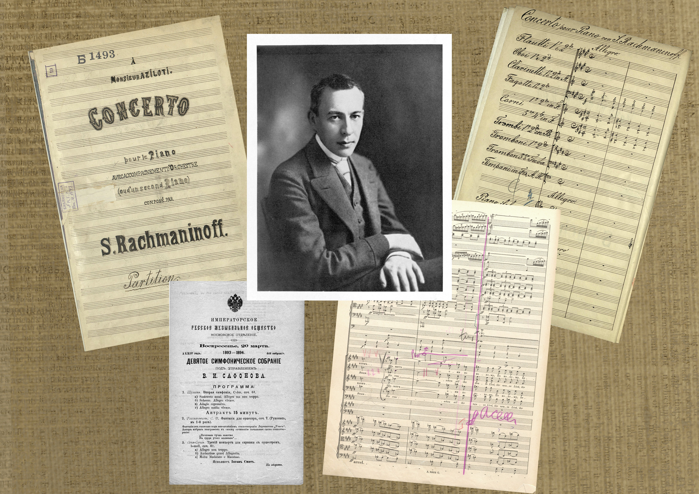
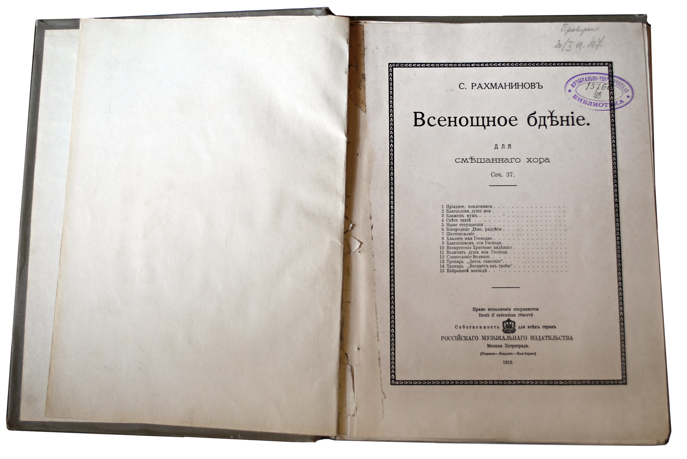

РАХМАНИНОВУ ПОСВЯЩАЕТСЯ
К 150-ЛЕТИЮ СО ДНЯ РОЖДЕНИЯ
Научная музыкальная библиотека имени С.И. Танеева приглашает ознакомиться с выставкой, расположенной в витринах фойе Большого зала консерватории, посвященной 150-летию со дня рождения Сергея Васильевича Рахманинова. На выставке представлены редкие материалы из фондов библиотеки, связанные с именем композитора и отдельными этапами его творческой жизни в Москве до 1917 года.
О выступлениях Рахманинова-студента Московской консерватории по классу А. И. Зилоти напоминают две программы концертов — 12 марта и 16 ноября 1889 года.
Первый концерт для фортепиано с оркестром показан на выставке в первой редакции. Экспонируемая рукописная копия выполнена предположительно в первой четверти ХХ века, задолго до выхода в свет издания партитуры.
Фантазию для оркестра «Утёс» представляют историческая программа концерта с сообщением о первом исполнении сочинения под руководством В. И. Сафонова, рукописные и печатные оркестровые голоса с пометками одного из лучших отечественных интерпретаторов музыки С. В. Рахманинова дирижера Н. С. Голованова. Наряду с этими экземплярами экспонируется первое издание партитуры фантазии.
Несомненный интерес вызовут материалы, относящиеся к кантате «Весна». Предоставляется редкая возможность увидеть рукописные оркестровые голоса, подготовленные к первому исполнению произведения 11 марта 1902 года. На их страницах сохранились пометки Рахманинова (партия 2-й скрипки) и записи оркестрантов об успешном концерте (партия виолончели); первое издание клавира сочинения с дарственной надписью С. В. Рахманинова А. С. Аренскому; программу московского концерта 15 марта 1911 года, включающую исполнение кантаты под управлением автора; первое издание партитуры и оркестровых голосов с пометками Н. С. Голованова.
В экспозицию включено одно из первых изданий «Всенощного бдения», отпечатанное с рукописной копии, выполненной композитором и хоровым дирижером Н. И. Озеровым в 1915 году (в год создания и первого исполнения сочинения).
Дополняют экспозицию программы двух концертов 1917 года, стоящих в ряду последних выступлений Рахманинова в Москве — 7 января (концерт был целиком посвящен произведениям Рахманинова — «Утёс», «Остров мёртвых», «Колокола», дирижировал автор) и 25 февраля (концерт включал исполнение Рахманиновым Второго концерта для фортепиано с оркестром, дирижер А. Коутс).
Несомненным украшением выставки являются экземпляры, принадлежавшие композитору: Подвижной контрапункт строгого письма С. И. Танеева, подаренный С. В. Рахманинову в 1909 году с дарственной надписью (дар профессора Московской консерватории И. В. Коженовой библиотеке), Прелюд из кантаты [№ 29]. И. С. Баха в транскрипции для фортепиано А. Зилоти (с пометками А. Зилоти и С. Рахманинова) и Экспромт ор. 142 № 2 для фортепиано Ф. Шуберта (дар В. Л. Розанова и С. Д. Островской библиотеке Московской консерватории).